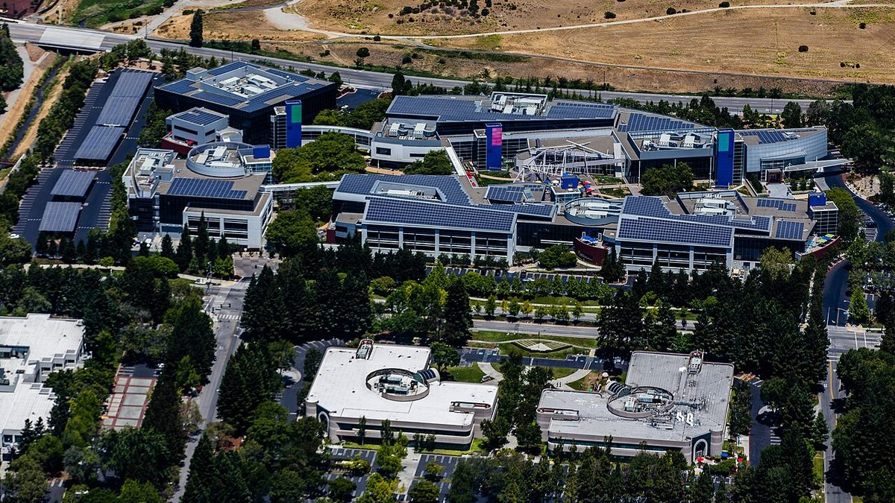

Gemini 4 Carbon takes the top spot two weeks after Argon
Google's newest model leads Artificial Analysis's rebuilt index and three security benchmarks. Trusted cyber defenders get it first, with a gradual rollout to follow.
Sundar Pichai @sundarpichai · CEO, Google and Alphabet
"I did say we'd be releasing our models periodically," Pichai wrote at 1:01pm EDT Wednesday, introducing Gemini 4 Carbon as "our next frontier model." He said it ranks first on version 5.0 of the Artificial Analysis Intelligence Index at 59, and scored 88.2% on SEC-bench Pro for finding vulnerabilities, 54.8% on ExploitGym for exploitation and 71.0% on CWE-bench for patching. "We're seeing significant improvements in long-horizon tasks even compared to Argon," he added, and "some trusted cyber defenders will get access starting this week," with more partners to follow through Google's Fairwind Program "ahead of wider availability soon."
Google's announcement, by Koray Kavukcuoglu, said Carbon went through the US government's voluntary pre-release testing. It lists an introductory price of $2 per million input tokens and $10 per million output tokens, rising later to $4 and $20, with cached input 95% cheaper. The model placed fourth on WebDev Arena at 1,768, up 89 points. Google said Carbon ran "for days" on engineering tasks, and that the Chrome team saw patches more than 10 times better than those from another lab's model.



Safety numbers Google's evaluation results
Google reported a 0.0% cheating rate on Terminal-Bench 4.0, high-severity misalignment alerts down about 80% and unsupported claims roughly halved. On Gray Swan's prompt-injection test Carbon scored 0.0%, against 0.7% for Argon, and it more than doubled Argon's secure-code gains, according to the post.
Demis Hassabis @demishassabis · CEO, Google DeepMind
Hassabis, whose lab built the model, posted two minutes after Pichai:
"Iterating at lightning speed! Gemini 4 Carbon is SOTA across key benchmarks and combines frontier capabilities with deep safety & security research."
SOTA means state of the art. Elon Musk replied "Impressive" to Hassabis at 1:50pm EDT and quoted Pichai's post with the same word at 1:59pm EDT. Hassabis answered "Thanks!"


.jpg){kind=link}